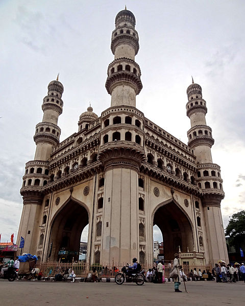

HOME
Charminar

About
The Charminar ("Four Minarets"), constructed in 1591, is a monument and mosque located in Hyderabad, Telangana, India. The landmark has become a global icon of Hyderabad, listed among the most recognized structures of India.
Charminar is a historical place since 400 years and also famous for its surrounding markets.It is one of the tourist attraction in hyderabad. Bangles can be found at cheaper rate. Many local festivals are celebrated grandly in charminar like Ramzaan and other festivals.
The Charminar is situated on the east bank of Musi river. To the west lies the Laad Bazaar, and to the southwest lies the richly ornamented granite Makkah Masjid. It is listed as an archaeological and architectural treasure on the official "List of Monuments" prepared by the Archaeological Survey of India.
The English name is a translation and combination of the Urdu words Char and Minar or meenar, translating to "Four Pillars"; the eponymous towers are ornate minarets attached and supported by four grand arches.
Historian Masud Hussain Khan says that the construction of Charminar was completed in the year 1592, and that it is the city of Hyderabad which was actually founded in the year 1591. According to the book "Days of the Beloved", Qutb shah constructed the Charminar in the year 1589, on the very spot where he first glimpsed his future queen Bhagmati, and after her conversion to Islam, Qutb Shah renamed the city as "Hyderabad".
Though the story was denied by the historians and scholars, it became popular folklore among the locals.